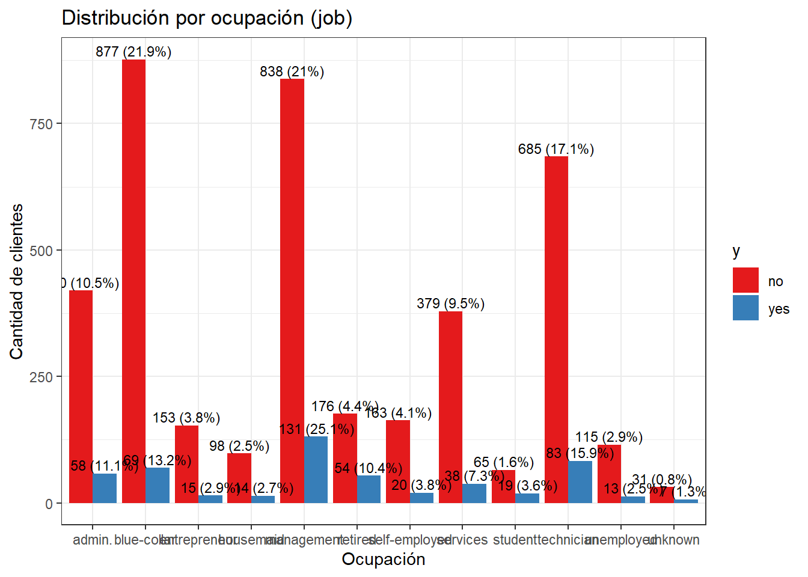
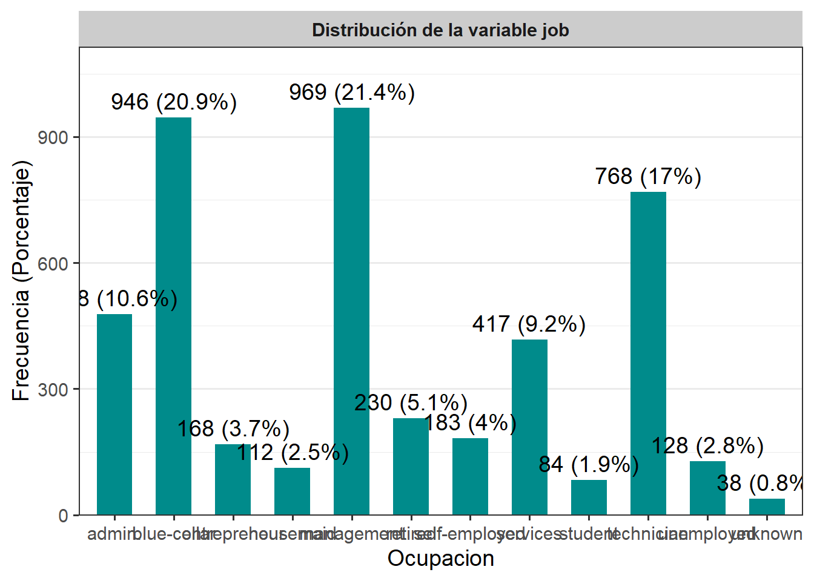
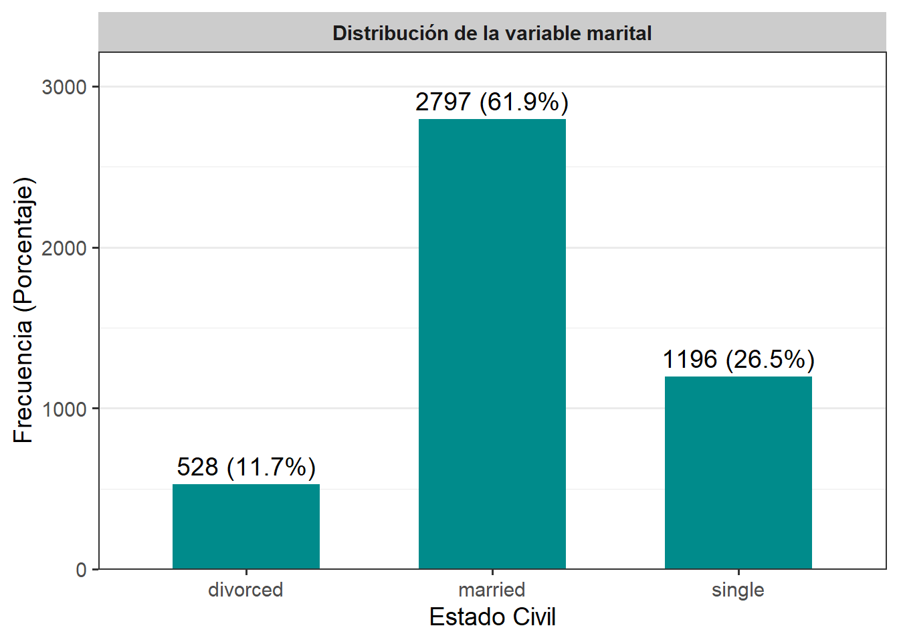
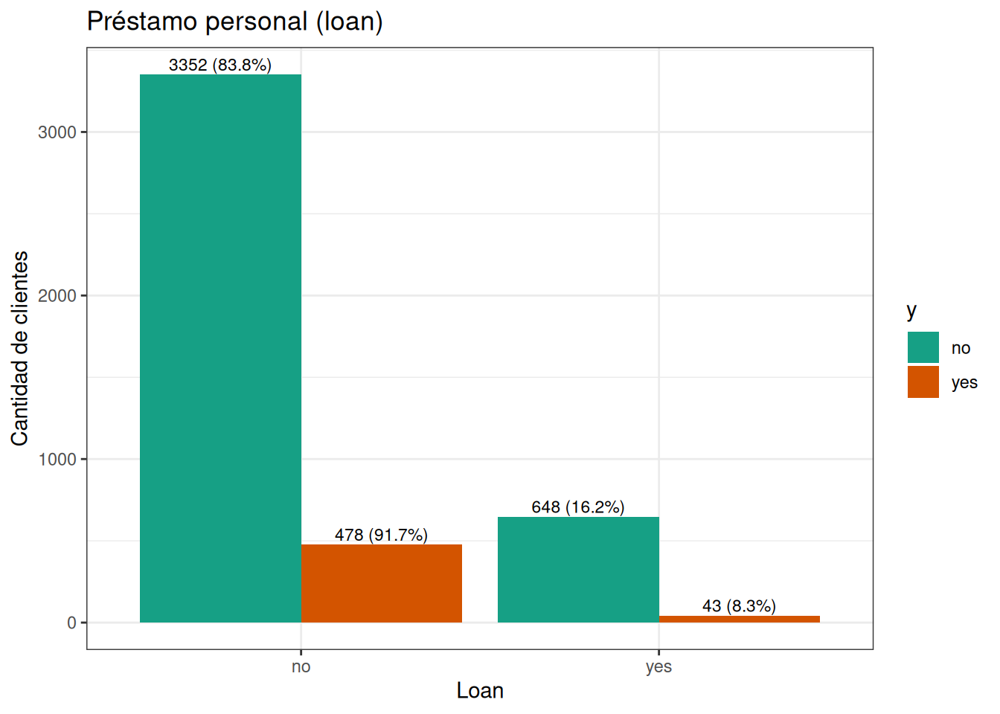
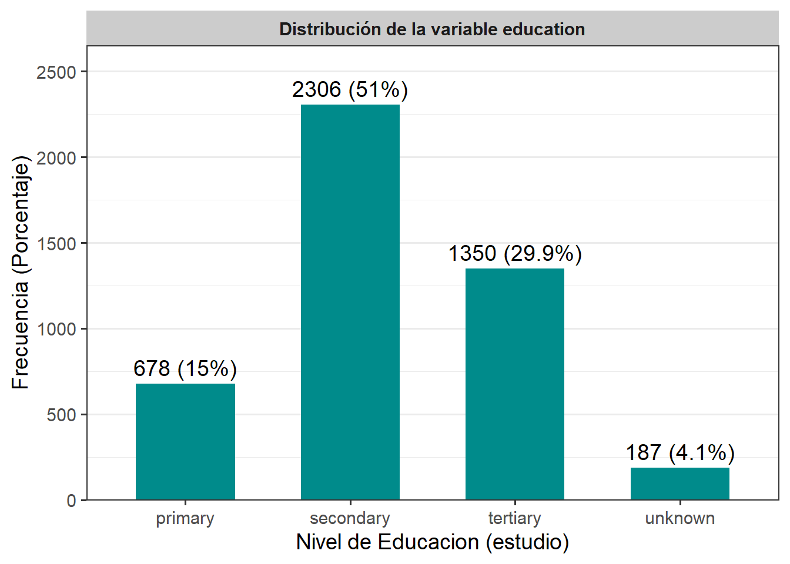
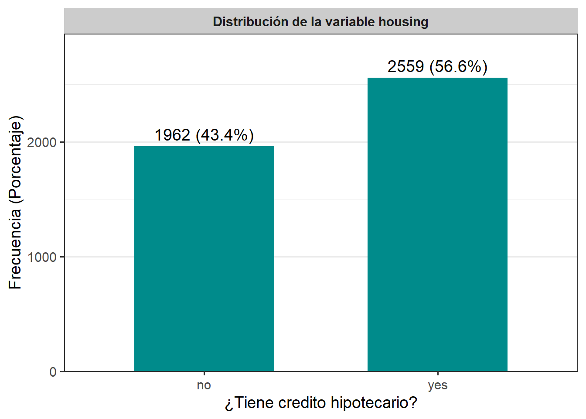
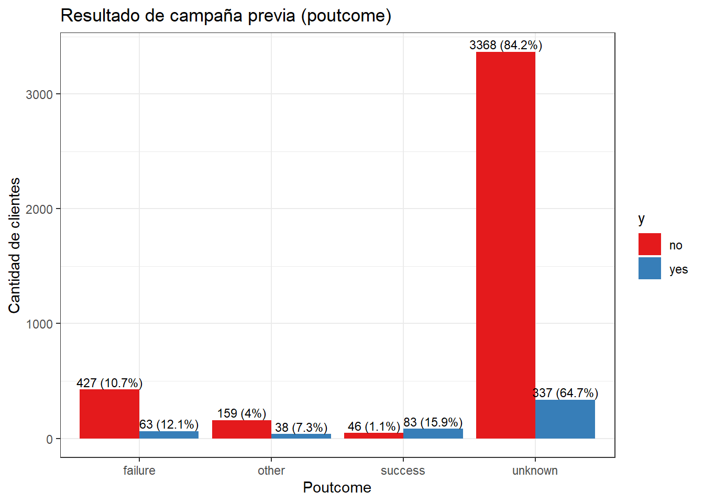
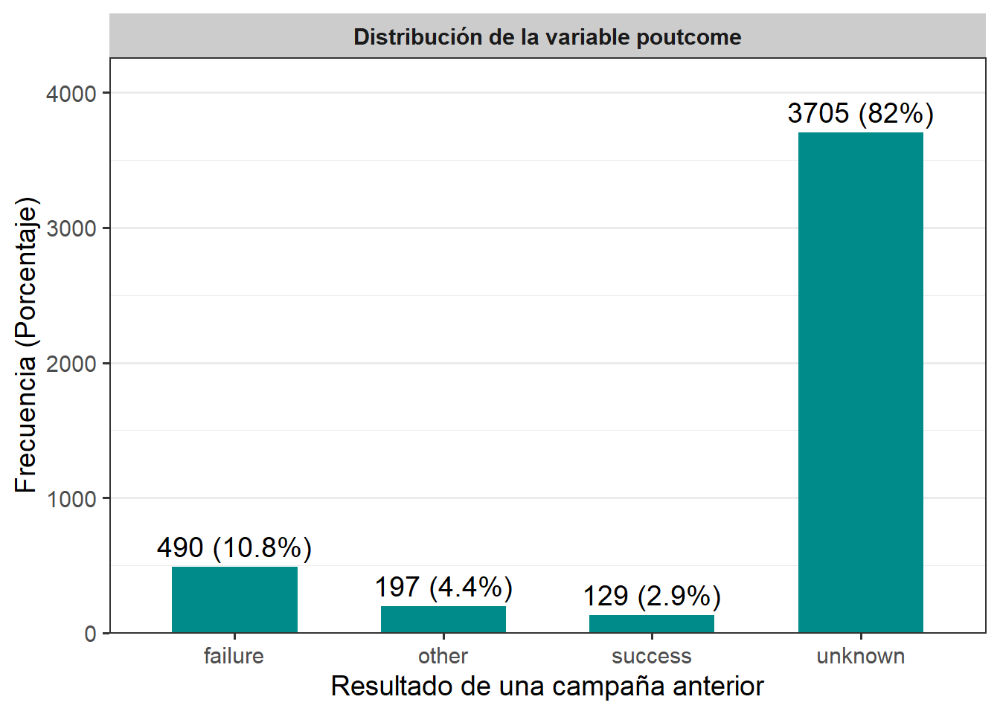

Chapter 6 Diagrama de boxplot para pdays
df %>%
ggplot(aes(x = "", y = pdays)) +
geom_boxplot(fill = "#9467bd", alpha = 0.7) +
stat_summary(fun = mean, geom = "point", shape = 18, size = 4, color = "black") +
labs(
title = "Días desde último contacto en campaña anterior (pdays)",
y = "Días",
x = ""
) +
theme_bw() Interpretacion El boxplot de (pdays) muestra una distribución fuertemente sesgada positivamente, donde la mayoría de los clientes tienen valores cercanos a cero días desde el último contacto, concentrándose en el primer cuartil, mientras que existen numerosos valores atípicos muy alejados (hasta más de 800 días) que generan una cola derecha larga. Esto indica que, aunque la mediana es baja, un pequeño grupo de clientes fue contactado después de intervalos de tiempo extremadamente largos, lo que eleva la media y refleja una gran dispersión en la variable.
Ahora procedemos a analizar las variables categoricas:
#Tabla agrupada de variables categoricas
#Para job
tabla_job <- df %>%
count(job, name = "Frecuencia") %>%
mutate(Porcentaje = round(Frecuencia / sum(Frecuencia) * 100, 2),
Variable = "job",
Categoria = job) %>%
select(Variable, Categoria, Frecuencia, Porcentaje)
#Para marital
tabla_marital <- df %>%
count(marital, name = "Frecuencia") %>%
mutate(Porcentaje = round(Frecuencia / sum(Frecuencia) * 100, 2),
Variable = "marital",
Categoria = marital) %>%
select(Variable, Categoria, Frecuencia, Porcentaje)
#Para education
tabla_education <- df %>%
count(education, name = "Frecuencia") %>%
mutate(Porcentaje = round(Frecuencia / sum(Frecuencia) * 100, 2),
Variable = "education",
Categoria = education) %>%
select(Variable, Categoria, Frecuencia, Porcentaje)
#Para default
tabla_default <- df %>%
count(default, name = "Frecuencia") %>%
mutate(Porcentaje = round(Frecuencia / sum(Frecuencia) * 100, 2),
Variable = "default",
Categoria = default) %>%
select(Variable, Categoria, Frecuencia, Porcentaje)
#Para housing
tabla_housing <- df %>%
count(housing, name = "Frecuencia") %>%
mutate(Porcentaje = round(Frecuencia / sum(Frecuencia) * 100, 2),
Variable = "housing",
Categoria = housing) %>%
select(Variable, Categoria, Frecuencia, Porcentaje)
#Para loan
tabla_loan <- df %>%
count(loan, name = "Frecuencia") %>%
mutate(Porcentaje = round(Frecuencia / sum(Frecuencia) * 100, 2),
Variable = "loan",
Categoria = loan) %>%
select(Variable, Categoria, Frecuencia, Porcentaje)
#Para contact
tabla_contact <- df %>%
count(contact, name = "Frecuencia") %>%
mutate(Porcentaje = round(Frecuencia / sum(Frecuencia) * 100, 2),
Variable = "contact",
Categoria = contact) %>%
select(Variable, Categoria, Frecuencia, Porcentaje)
#Para poutcome
tabla_poutcome <- df %>%
count(poutcome, name = "Frecuencia") %>%
mutate(Porcentaje = round(Frecuencia / sum(Frecuencia) * 100, 2),
Variable = "poutcome",
Categoria = poutcome) %>%
select(Variable, Categoria, Frecuencia, Porcentaje)
#Todas las tablas
bind_rows(tabla_job, tabla_marital, tabla_education,tabla_default,
tabla_housing, tabla_loan,tabla_contact, tabla_poutcome)## Variable Categoria Frecuencia Porcentaje
## 1 job admin. 478 10.57
## 2 job blue-collar 946 20.92
## 3 job entrepreneur 168 3.72
## 4 job housemaid 112 2.48
## 5 job management 969 21.43
## 6 job retired 230 5.09
## 7 job self-employed 183 4.05
## 8 job services 417 9.22
## 9 job student 84 1.86
## 10 job technician 768 16.99
## 11 job unemployed 128 2.83
## 12 job unknown 38 0.84
## 13 marital divorced 528 11.68
## 14 marital married 2797 61.87
## 15 marital single 1196 26.45
## 16 education primary 678 15.00
## 17 education secondary 2306 51.01
## 18 education tertiary 1350 29.86
## 19 education unknown 187 4.14
## 20 default no 4445 98.32
## 21 default yes 76 1.68
## 22 housing no 1962 43.40
## 23 housing yes 2559 56.60
## 24 loan no 3830 84.72
## 25 loan yes 691 15.28
## 26 contact cellular 2896 64.06
## 27 contact telephone 301 6.66
## 28 contact unknown 1324 29.29
## 29 poutcome failure 490 10.84
## 30 poutcome other 197 4.36
## 31 poutcome success 129 2.85
## 32 poutcome unknown 3705 81.95#Interpretacion general Viendo la variable (marital), la mayoria de los clientes registrados (61,87%) son de estado civil casados, seguidos de 1196 que se declaran solteros (26,45%) y el resto son divorciados (11,68%). En cuanto a la educacion, la mayoria de estos usuarios ha cursado hasta niveles de secundaria con 2306 personas(51,01%), seguidos de personas que han tenido niveles de educacion terciaria como universidades, institutos tecnicos, maestrias, postgrados, etc; con un porcentaje de 29,86% lo que es equivalente a 1350 individuos, luego se ubican las personas con una educacion primaria como maximo, siendo 678 personas, las cuales representan un 15% de la muestra y por ultimo estan aquellos que no registran algun tipo de nivel de educacion. La variable (default) muestra si los clientes presentan credito en incumplimiento, a lo que la gran mayoria dice que no, 4445 personas (98,32%) niegan tener un credito sin cumplir, y solo 76 personas afirman estar incumpliendo con dicho credito, por otra parte, el 56,6% de los usuarios dijo que si despues de preguntarles si tenian un credito hipotecario, el otro 43,4% expuso que no tenian credito hipotecario; tambien se dio a conocer que la mayoria no tiene creditos personales, fueron 3830 personas las que negaron tener este tipo de credito, representando un 84,72% de la muestra; el otro 15,28% (691 usuarios) dijeron que si. Ademas, se recogio informacion acerca del metodo utilizado para contactarlos, donde mayoritariamente (64,06%) dijeron que se habian comunicado con ellos via celular, luego con casi el 30% estan las personas que desconocen el tipo de comunicacion que usaron, y con el porcentaje mas bajo (6,66%) se pueden observar las personas que tuvieron contacto con el banco por medio de un telefono fijo. En los resultados de campañas anteriores (poutcome), 3705 usuarios manifestaron desconocer el resultado de campañas anteriores, siendo estos la gran mayoria con un 81,95%, seguidos del 10,84% que señalan a las campañas previas como un absoluto fracaso, luego se ubican con un 4,36% (197 personas) aquellos que tienen otra percepcion frente a estas campañas, y por ultimo, vemos a la gran minoria que establece que las campañas fueron un rotundo exito (129 personas que representan el 2,85%). En cuanto a las ocupaciones de los usuarios, se observa que las más comunes son “management” (21.43%), “blue-collar” (20.92%) y “technician” (16.99%), lo que indica que estos tres grupos representan casi el 60% de la muestra total. En contraste, las personas con ocupaciones que se desconocen (0.84%), estudiantes (1.86%) y empleados domesticos (2.48%) tienen una representación mucho menor. Esto sugiere una muestra compuesta principalmente por trabajadores con cargos administrativos, técnicos y operativos, lo cual podría reflejar el perfil laboral de una muestra económicamente activa en sectores formales. Entre otros trabajos consignados en la informacion, podemos observar 168 emprendedores (3,72%), 478 administradores (10,57%), 230 personas retiradas (5,09%), 183 trabajadores autonomos (4,05%), 417 que se ocupan de servicios que involucran atencion directa al publico (9,22%) y 128 desempleados (2,83%).
#Graficos de barras para cada variable categorica
grafico_default <- df %>%
count(default, name = "Frecuencia") %>%
mutate(Porcentaje = round(Frecuencia / sum(Frecuencia) * 100, 1),
Etiqueta = paste0(Frecuencia, " (", Porcentaje, "%)"))
grafico_default %>%
ggplot(aes(x = default, y = Frecuencia)) +
geom_col(fill = "#008B8B", width = 0.6) +
geom_text(aes(label = Etiqueta), vjust = -0.5, size = 5) +
facet_wrap(~ "Distribución de la variable default") +
scale_y_continuous(expand = expansion(mult = c(0, 0.15))) +
labs(x = "¿Tiene crédito en incumplimiento?",
y = "Frecuencia (Porcentaje)") +
theme_bw(base_size = 14) +
theme(
plot.title = element_blank(),
strip.background = element_rect(fill = "gray80", color = NA),
strip.text = element_text(face = "bold"),
panel.grid.major.x = element_blank()
) #Interpretacion
grafico_job <- df %>%
count(job, name = "Frecuencia") %>%
mutate(Porcentaje = round(Frecuencia / sum(Frecuencia) * 100, 1),
Etiqueta = paste0(Frecuencia, " (", Porcentaje, "%)"))
grafico_job %>%
ggplot(aes(x = job, y = Frecuencia)) +
geom_col(fill = "#008B8B", width = 0.6) +
geom_text(aes(label = Etiqueta), vjust = -0.5, size = 5) +
facet_wrap(~ "Distribución de la variable job") +
scale_y_continuous(expand = expansion(mult = c(0, 0.15))) +
labs(x = "Ocupacion",
y = "Frecuencia (Porcentaje)") +
theme_bw(base_size = 14) +
theme(
plot.title = element_blank(),
strip.background = element_rect(fill = "gray80", color = NA),
strip.text = element_text(face = "bold"),
panel.grid.major.x = element_blank()
) #Interpretacion
grafico_marital <- df %>%
count(marital, name = "Frecuencia") %>%
mutate(Porcentaje = round(Frecuencia / sum(Frecuencia) * 100, 1),
Etiqueta = paste0(Frecuencia, " (", Porcentaje, "%)"))
grafico_marital %>%
ggplot(aes(x = marital, y = Frecuencia)) +
geom_col(fill = "#008B8B", width = 0.6) +
geom_text(aes(label = Etiqueta), vjust = -0.5, size = 5) +
facet_wrap(~ "Distribución de la variable marital") +
scale_y_continuous(expand = expansion(mult = c(0, 0.15))) +
labs(x = "Estado Civil",
y = "Frecuencia (Porcentaje)") +
theme_bw(base_size = 14) +
theme(
plot.title = element_blank(),
strip.background = element_rect(fill = "gray80", color = NA),
strip.text = element_text(face = "bold"),
panel.grid.major.x = element_blank()
) #Interpretacion
grafico_education <- df %>%
count(education, name = "Frecuencia") %>%
mutate(Porcentaje = round(Frecuencia / sum(Frecuencia) * 100, 1),
Etiqueta = paste0(Frecuencia, " (", Porcentaje, "%)"))
grafico_education %>%
ggplot(aes(x = education, y = Frecuencia)) +
geom_col(fill = "#008B8B", width = 0.6) +
geom_text(aes(label = Etiqueta), vjust = -0.5, size = 5) +
facet_wrap(~ "Distribución de la variable education") +
scale_y_continuous(expand = expansion(mult = c(0, 0.15))) +
labs(x = "Nivel de Educacion (estudio)",
y = "Frecuencia (Porcentaje)") +
theme_bw(base_size = 14) +
theme(
plot.title = element_blank(),
strip.background = element_rect(fill = "gray80", color = NA),
strip.text = element_text(face = "bold"),
panel.grid.major.x = element_blank()
) #Interpretacion
grafico_housing <- df %>%
count(housing, name = "Frecuencia") %>%
mutate(Porcentaje = round(Frecuencia / sum(Frecuencia) * 100, 1),
Etiqueta = paste0(Frecuencia, " (", Porcentaje, "%)"))
grafico_housing %>%
ggplot(aes(x = housing, y = Frecuencia)) +
geom_col(fill = "#008B8B", width = 0.6) +
geom_text(aes(label = Etiqueta), vjust = -0.5, size = 5) +
facet_wrap(~ "Distribución de la variable housing") +
scale_y_continuous(expand = expansion(mult = c(0, 0.15))) +
labs(x = "¿Tiene credito hipotecario?",
y = "Frecuencia (Porcentaje)") +
theme_bw(base_size = 14) +
theme(
plot.title = element_blank(),
strip.background = element_rect(fill = "gray80", color = NA),
strip.text = element_text(face = "bold"),
panel.grid.major.x = element_blank()
) #Interpretacion
grafico_loan <- df %>%
count(loan, name = "Frecuencia") %>%
mutate(Porcentaje = round(Frecuencia / sum(Frecuencia) * 100, 1),
Etiqueta = paste0(Frecuencia, " (", Porcentaje, "%)"))
grafico_loan %>%
ggplot(aes(x = loan, y = Frecuencia)) +
geom_col(fill = "#008B8B", width = 0.6) +
geom_text(aes(label = Etiqueta), vjust = -0.5, size = 5) +
facet_wrap(~ "Distribución de la variable loan") +
scale_y_continuous(expand = expansion(mult = c(0, 0.15))) +
labs(x = "¿Tiene credito personal?",
y = "Frecuencia (Porcentaje)") +
theme_bw(base_size = 14) +
theme(
plot.title = element_blank(),
strip.background = element_rect(fill = "gray80", color = NA),
strip.text = element_text(face = "bold"),
panel.grid.major.x = element_blank()
) #Interpretacion
grafico_contact <- df %>%
count(contact, name = "Frecuencia") %>%
mutate(Porcentaje = round(Frecuencia / sum(Frecuencia) * 100, 1),
Etiqueta = paste0(Frecuencia, " (", Porcentaje, "%)"))
grafico_contact %>%
ggplot(aes(x = contact, y = Frecuencia)) +
geom_col(fill = "#008B8B", width = 0.6) +
geom_text(aes(label = Etiqueta), vjust = -0.5, size = 5) +
facet_wrap(~ "Distribución de la variable contact") +
scale_y_continuous(expand = expansion(mult = c(0, 0.15))) +
labs(x = "Tipo de comunicacion utilizada",
y = "Frecuencia (Porcentaje)") +
theme_bw(base_size = 14) +
theme(
plot.title = element_blank(),
strip.background = element_rect(fill = "gray80", color = NA),
strip.text = element_text(face = "bold"),
panel.grid.major.x = element_blank()
) #Interpretacion
grafico_poutcome <- df %>%
count(poutcome, name = "Frecuencia") %>%
mutate(Porcentaje = round(Frecuencia / sum(Frecuencia) * 100, 1),
Etiqueta = paste0(Frecuencia, " (", Porcentaje, "%)"))
grafico_poutcome %>%
ggplot(aes(x = poutcome, y = Frecuencia)) +
geom_col(fill = "#008B8B", width = 0.6) +
geom_text(aes(label = Etiqueta), vjust = -0.5, size = 5) +
facet_wrap(~ "Distribución de la variable poutcome") +
scale_y_continuous(expand = expansion(mult = c(0, 0.15))) +
labs(x = "Resultado de una campaña anterior",
y = "Frecuencia (Porcentaje)") +
theme_bw(base_size = 14) +
theme(
plot.title = element_blank(),
strip.background = element_rect(fill = "gray80", color = NA),
strip.text = element_text(face = "bold"),
panel.grid.major.x = element_blank()
)#Interpretacion